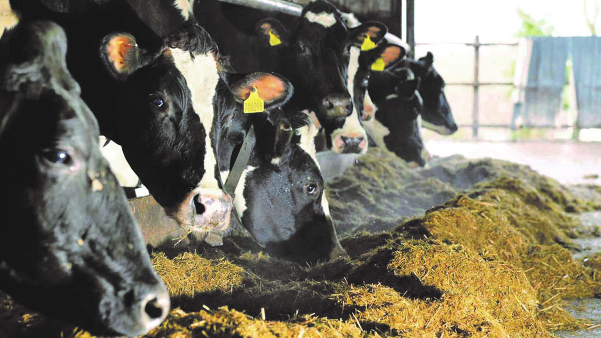
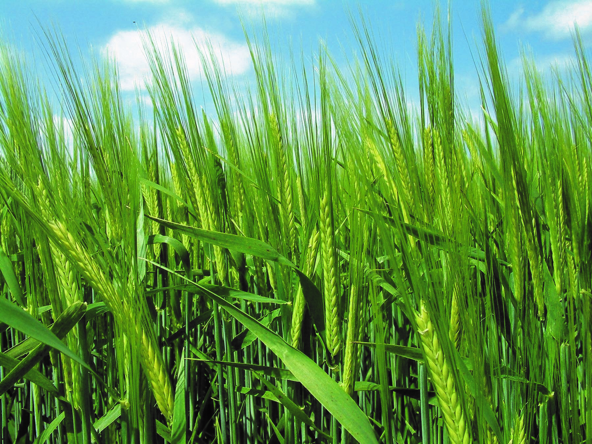

Farm families are today members of a new global society that brings new threats and new opportunities. Three issues are foremost in the minds of many of today’s farm families:

KEEPFARMINGON, through a unique intervention, supports and reinforces 'best practise' on the Irish family farm. The current ever changing global society calls for a new and managed way on the family farm. Major issues now challenging the family farm including interpersonal communication, identifying what people want, succession and inheritance planning, marital breakdown, and disconnection and isolation.
Challenges
The challenges of the modern farm family are many. Some challenges predominate:
These are in addition to rules, regulations, management of ever changing conditions and the vagaries of local and world markets.
We now need a new way to farm and make the most of our human strengths, human resources and opportunities.

Work on the modern farm has become easier because of improvements in technology and in techniques. However the management of farming has become more onerous and more complex and possibly because of efficiencies, increased competition and competitiveness and has become more psychologically demanding and more stressful than in the past. How do you keep so many balls in the air and never let one fall ever?
Attention to standards of environmental care, animal welfare, crop control, food safety regulation, safety rules, the weather and management of interpersonal communication and relationships place heavy burdens on the farm family member and in particular on the overall manager, principal or ‘head of the household’.
The intergenerational family farm team members have got the work done for many generations every day, all day for 365 days of every year for perhaps 100 years. All members have made an effort and some have made extraordinary effort to keep the family farm going.
In many cases this was not to optimum efficiency due to the constraints of working dynamics.
Grandparents, parents and their sons and daughters working together and living together on family farms in the past have generated a livelihood and sometimes prosperity for generations. That is now all changed. That was then. The circumstances of today are altogether different. Change is difficult. It comes through chance, through crisis or through choice. If you choose, we can guide you.

The farm wife is often placed in a traditional role of home-maker and peace-maker. She is often placed in a very stressful, invidious and non-sustainable position when asked to resolve disagreements of other family members even when she has little power or influence. What can she do?
Huge responsibility is placed on the husband. This becomes particularly onerous when there has been a bad year and when cashflow problems arise. Relationships difficulties with wife and family members can ensue. This is compounded with difficulties when banks and revenue and suppliers and creditors keep calling. What can he do?
Sons and daughters are affected by the challenges in the family farm. They may have wishes to have greater income, greater independence, pursue further education or career or marriage or partnership. What can the family as whole do?
Many family farms have to provide for grandparents and parents in addition to young children. What can the family do to keep on, respect each individual’s wishes and dignity and grow in such circumstances?

We provide coaching and mentoring in:

Succession Planning and Inheritance are important issues on the Family Farm. These issues include taxation, finance, security of farm in the future, parent and offspring relationships, siblings’ relationships and the well-being and contentment of all members of the family.
Effective day to day teamwork and successful work outcomes ensure adequate current income and preparation for farm succession/transfer when the time is right.
In every parish across the country there are examples of the family farm being brought to its knees by unattended resolvable conflicts. These conflicts are caused mostly by misunderstanding of self and/or of others or a combination of both, that in most cases could be cleared up with a little intervention.

Jim Buckley, the Leader of the KEEPFARMINGON team, has a wealth of experience and expertise in Behaviour Change Management, Accountancy, Training / Mentoring and Coaching. He has distilled and interwoven his diverse expertise to enable him to identify an unique comprehensive view, to locate and deal with obstacles and to identify and engage opportunities.

Our Track-record is:
To contact us in strict confidence, please do so by, email or telephone.
To assist in managing office . The Ideal candidate will have computer skills and will be ambitious with an interest in psychology and communications. The position will facilitate the candidate to improve their English language fluency and complete some Jungian studies if interest . The candidate will receive travel and living expenses and a weekly allowance . If interested please email your resume us.